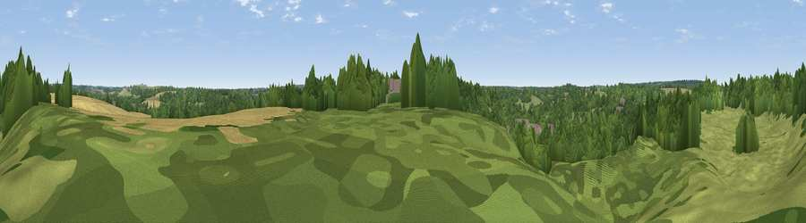

Viewpoint near Waterford
#45357 in England · top 75% of its area beats it · near WaterfordWhere it is
The exact computed spot (TL 32032 14540). Click the marker for map links.
The view, rendered

A 360° render of this exact spot computed from the terrain model, tree cover and land cover — summer colours, afternoon light, calibrated against photographs of famous viewpoints. Real trees, hedges and buildings will differ in detail.
The panorama
Grey silhouette: terrain skyline in each direction (720 bearings, Earth curvature and refraction included). Dashed green: skyline with trees (+15 m) and buildings (+8 m) as obstacles. Blue strip: how far the ground is visible on each bearing.
Where the view opens
Wedge length = distance to the farthest visible ground on that bearing (vegetation-aware). Rings at 10, 25 and 50 km.
What fills the view
53% woodland · 34% grassland · 8% cropland · 5% built-up
Angular shares of the visible panorama (visual magnitude), not map area. Landscape diversity 0.46 (0–1 Shannon).
Key numbers
More beautiful places nearby
The staircase of upgrades: each row has a higher view potential than everything closer. Driving times are estimates from straight-line distance, calibrated against real road routing — check an actual route before setting out.
| Place | Direction | Drive | Score |
|---|---|---|---|
| Viewpoint near Tonwell | ENE · 2 km | ~5 min | 24.4 |
| Viewpoint near Thundridge | ENE · 3 km | ~7 min | 27.7 |
| Viewpoint near Lower Nazeing | SSE · 12 km | ~23 min | 28.5 |
| Viewpoint near Sewardstonebury | SSE · 19 km | ~32 min | 32.4 |
| Viewpoint near Baldock | NNW · 19 km | ~33 min | 53.7 |
| Viewpoint near Great Offley | NW · 24 km | ~39 min | 54.4 |
| Viewpoint near Hexton | NW · 25 km | ~40 min | 65.4 |
| Viewpoint near Ivinghoe | W · 36 km | ~54 min | 66.7 |
51.81390, -0.08606 · source: osm viewpoint · position refined by local search. Computed location — check access rights before visiting.